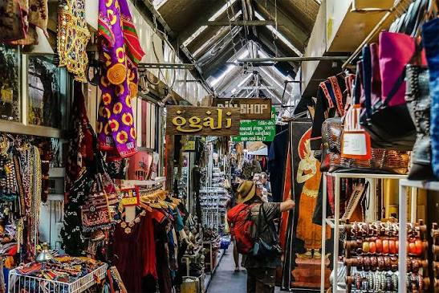
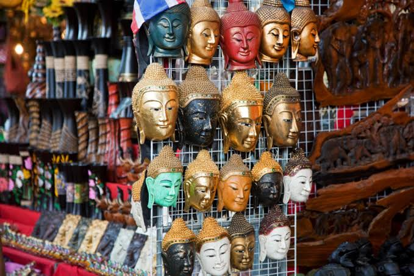
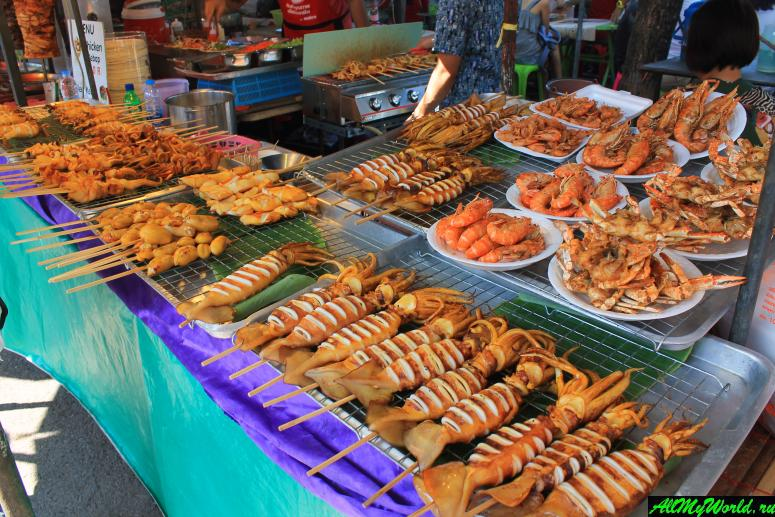
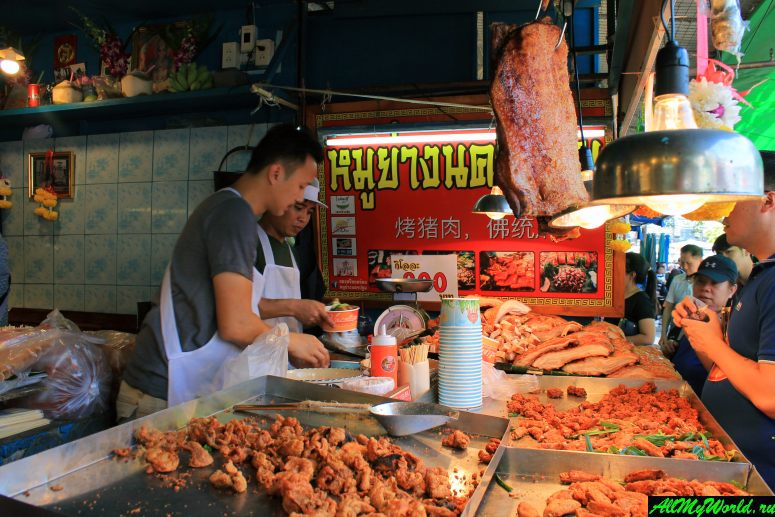
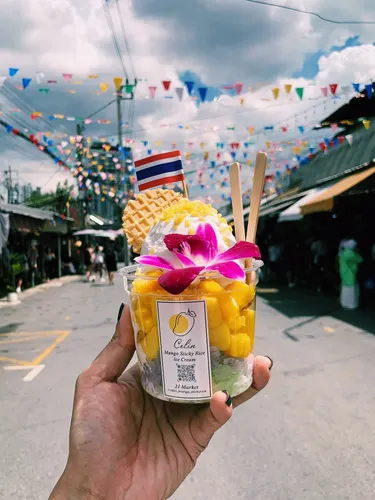
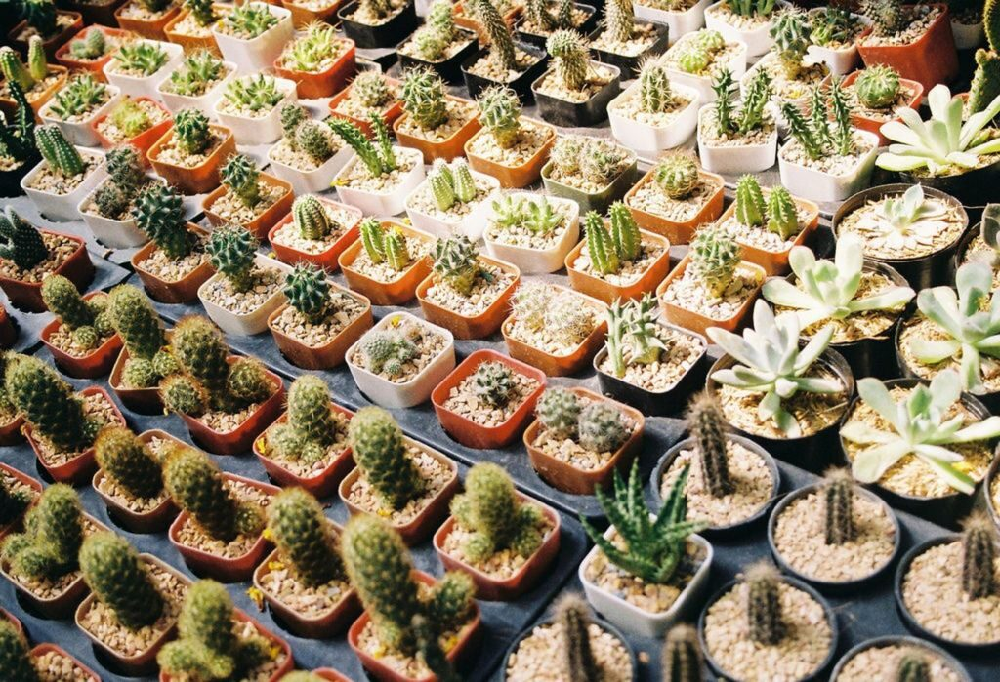
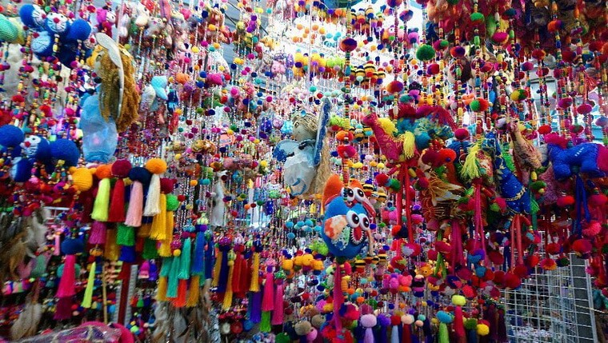
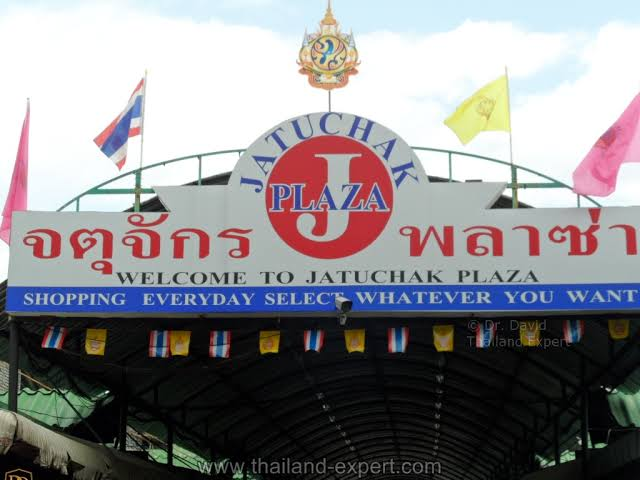

Рынок Чатучак — огромный рынок Бангкока

Рынок Чатучак (Chatuchak Weekend Market) — один из самых известных и больших рынков Бангкока. Он занимает огромную территорию и состоит из множества небольших секций, где продаются одежда, сувениры, украшения, предметы интерьера, антиквариат, растения, еда и многое другое.
Чатучак особенно известен своими огромными масштабами. Здесь можно провести несколько часов и всё равно не успеть обойти весь рынок. Для туриста это не просто место для покупок, а возможность увидеть настоящий торговый Бангкок и попробовать местную уличную еду.
Где находится
Рынок Чатучак находится в северной части центрального Бангкока, рядом с большим парком Чатучак. Находится рядом сразу с несколькими станциями общественного транспорта:
- Mo Chit BTS — станция наземного метро;
- Chatuchak Park MRT — станция подземного метро;
- Kamphaeng Phet MRT — ещё одна станция метро рядом с рынком.
Благодаря такому расположению до Чатучака достаточно легко добраться практически из любой части Бангкока.
Стоимость посещения
Вход на рынок бесплатный.
Платить нужно только за покупки, еду или отдельные услуги. На рынке можно найти как очень дешёвые товары, так и дорогие вещи ручной работы, предметы искусства и антиквариат.
Время работы
Чатучак известен прежде всего как рынок выходного дня.
- Суббота — воскресенье: примерно с 09:00 до 18:00;
- Пятница: работает часть рынка, преимущественно оптовая торговля;
- Понедельник — четверг: большинство секций рынка закрыто.
Расписание отдельных секций может отличаться, поэтому перед поездкой лучше проверить актуальное время работы. Лучше всего приезжать утром. В это время ещё не так жарко и значительно меньше людей. После обеда рынок становится намного более оживлённым.
Как добраться
BTS
Один из самых удобных способов добраться до Чатучака — воспользоваться наземным метро BTS.
Нужно доехать до станции Mo Chit, после чего пройти пешком до рынка.
Обычно дорога от станции занимает около 5–10 минут.
MRT
Можно воспользоваться подземным метро MRT и выйти на станции Chatuchak Park или Kamphaeng Phet.
Станция Kamphaeng Phet особенно удобна для некоторых частей рынка, так как один из выходов находится практически возле торговых рядов.
Такси или Grab
До рынка также можно доехать на такси или воспользоваться приложением Grab.
Однако в выходные дни возле рынка часто бывают пробки, поэтому метро обычно оказывается быстрее и удобнее.
Что посмотреть на рынке
Главная особенность Чатучака — огромное количество различных секций. Рынок разделён на множество зон, каждая из которых специализируется на определённых товарах.
1. Одежда и аксессуары

На рынке можно найти огромное количество одежды, обуви, сумок, головных уборов и различных аксессуаров. Здесь продаются как обычные недорогие вещи, так и необычная одежда местных дизайнеров и небольших брендов. Чатучак особенно интересен для тех, кто любит искать необычные вещи, которые сложно найти в обычных торговых центрах.
2. Сувениры и подарки

На рынке продаётся огромное количество сувениров.
- магниты;
- фигурки;
- тайская керамика;
- украшения;
- изделия ручной работы;
- картины;
- предметы традиционного тайского искусства.
Если хочется привезти из Бангкока что-нибудь необычное, Чатучак может оказаться интереснее обычных сувенирных магазинов.
3. Еда



Одна из главных частей посещения Чатучака — местная еда. На территории рынка можно найти множество небольших кафе и уличных торговцев, предлагающих традиционные тайские блюда.
Здесь можно попробовать Pad Thai, мясо на гриле, тайские супы, свежие фрукты, кокосовые десерты и манго с клейким рисом . Лучше не ограничиваться одним блюдом, а попробовать несколько небольших порций во время прогулки по рынку.
4. Растения и цветы

Одна из необычных частей Чатучака — огромный выбор растений. Здесь продаются декоративные растения, цветы, кактусы, орхидеи, небольшие деревья и различные принадлежности для садоводства. Эта часть рынка особенно интересна тем, что сильно отличается от обычных туристических торговых рядов.
5. Антиквариат и предметы искусства

На некоторых участках рынка можно найти старинные предметы, произведения искусства, мебель, керамику и необычные предметы интерьера. Некоторые продавцы специализируются на коллекционных вещах и антиквариате.
Что находится рядом
Чатучак находится в районе, где расположено несколько интересных мест, поэтому посещение рынка можно совместить с другими достопримечательностями.
Парк Чатучак
Парк Чатучак находится непосредственно рядом с рынком. После нескольких часов среди торговых рядов можно выйти в парк, прогуляться среди деревьев и немного отдохнуть от жары и большого количества людей.
Парк Вачирабенчатат
Недалеко от Чатучака находится большой парк Wachirabenchathat Park, который также называют Rot Fai Park. Это большое зелёное пространство с дорожками, деревьями и местами для отдыха.
JJ Mall

JJ Mall — торговый центр рядом с рынком Чатучак. Он может быть хорошим вариантом, если хочется продолжить покупки в помещении, особенно в жаркую погоду.
Важное для туристов
Следите за своими вещами. В выходные рынок становится очень людным, поэтому телефон, кошелёк и документы лучше держать в закрытой сумке или кармане.
Не бойтесь торговаться. На многих торговых точках цена может быть обсуждаемой. Однако торговаться стоит спокойно и уважительно.
Берите воду. Рынок огромный, а внутри некоторых секций бывает очень жарко и душно.
Надевайте удобную обувь. Здесь легко провести несколько часов и пройти большое расстояние.
Не пытайтесь обойти весь рынок. Чатучак настолько большой, что лучше заранее выбрать интересующие вас секции.
Следите за ценами. Один и тот же или похожий товар может продаваться у разных продавцов по разной стоимости.
Проверяйте возможность вывоза покупок. Если вы покупаете растения, изделия из дерева, антиквариат или другие необычные предметы, заранее убедитесь, что их разрешено вывозить из Таиланда и ввозить в вашу страну.
Как лучше провести время на Чатучаке
Для туриста оптимальный вариант — приехать утром и провести на рынке несколько часов.
Например:
- 09:00 — приезд на рынок;
- 09:15 — прогулка по торговым рядам;
- 10:30 — одежда, сувениры и аксессуары;
- 12:00 — обед и уличная еда;
- 13:00 — растения, искусство и необычные товары;
- 14:00 — прогулка по парку Чатучак;
- 15:00 — возвращение в центр Бангкока.
Такой маршрут позволит спокойно посмотреть рынок, поесть и немного отдохнуть, не проводя весь день среди торговых рядов.
Что запомнить
Рынок Чатучак — это место, куда стоит идти не только за покупками. Его главная особенность — огромный выбор товаров и атмосфера настоящего большого азиатского рынка.
Здесь можно одновременно попробовать тайскую уличную еду, найти необычные сувениры, посмотреть на местные товары и просто почувствовать ритм Бангкока.
Если Каосан Роуд показывает туристический и ночной Бангкок, а Чао Прайя — город с воды, то Чатучак показывает Бангкок как огромный живой торговый город , где рядом существуют туристы, местные жители, продавцы, ремесленники и владельцы небольших магазинов.